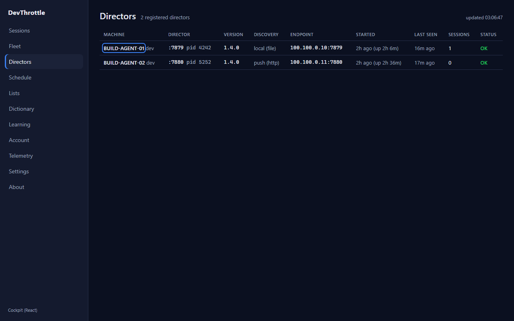
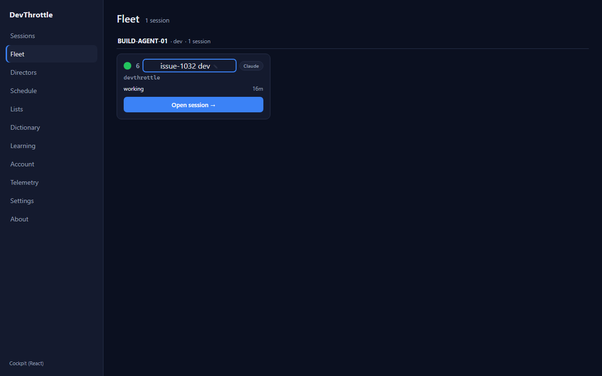
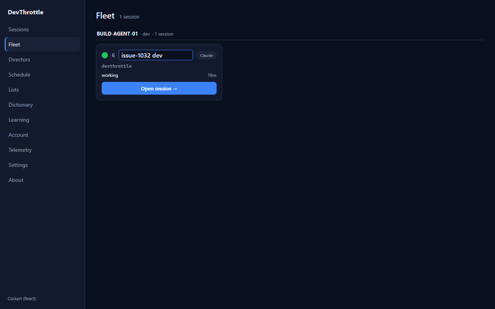
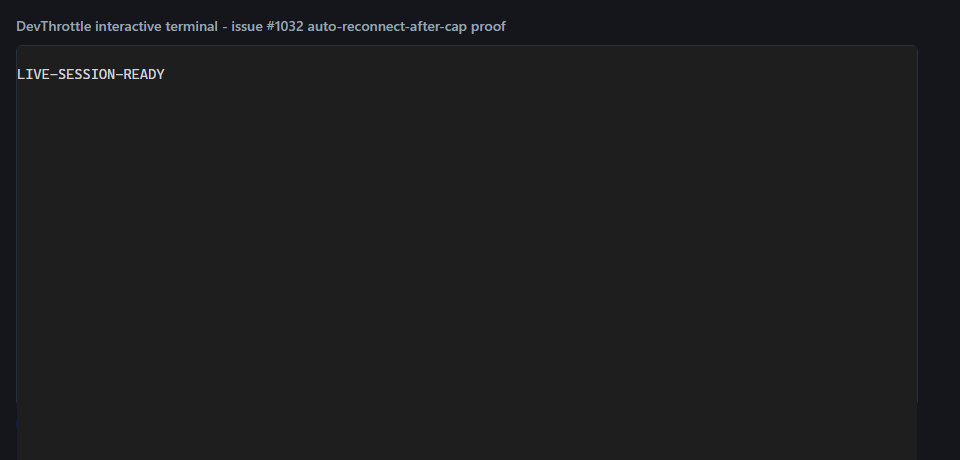
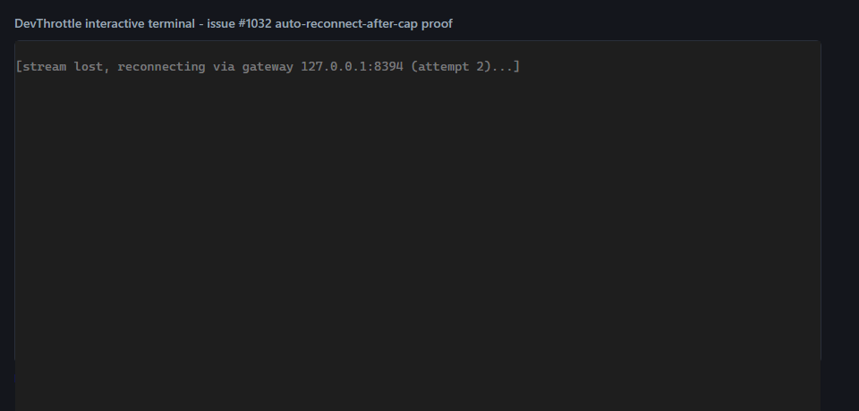
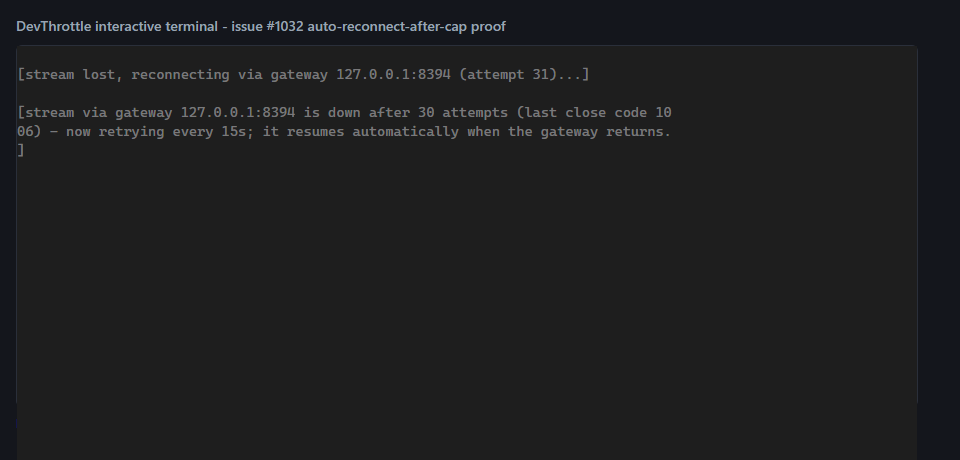

Developer Agent proof report · CenCon Development Method · branch
issue-1032-a11y-terminal-reconnect
<button>, so both are
reachable and operable with the keyboard (Tab, then Enter or Space) and show a clear focus ring.| Area / file | Change |
|---|---|
apps/cockpit/src/fleet/DirectorsView.tsx |
Each row's machine name is rendered as a React Router <Link>
(.dcell-namelink) to the Director detail. Keyboard users Tab to it and press
Enter; the whole-row onClick stays for the mouse (stopPropagation
avoids a double navigate). Falls back to the director id if the machine name is blank so the
link is never empty/unreachable. |
apps/cockpit/src/fleet/FleetView.tsx |
The "click to rename" title changed from a <span onClick> to a real
<button type="button" class="fleet-cardtitle-btn">, so it is
keyboard-focusable and fires on Enter/Space. |
apps/cockpit/src/fleet/fleet.css |
Added .dcell-namelink and .fleet-cardtitle-btn styles: button-chrome
reset for the rename button and a visible :focus-visible outline
(2px solid var(--accent)) on both; keyboard focus also reveals the rename pencil. |
packages/client-core/src/terminal/interactive.ts |
After the fast cap (MAX_RECONNECT_ATTEMPTS, ~36s) the engine no longer stops:
it drops to a slow keepalive probe (SLOW_RECONNECT_DELAY_MS = 15000), announces
the transition once per outage, and keeps retrying. The first live byte
(markLive) clears the streak and the announce flag, so recovery returns to the
fast cadence and a later outage re-announces. |
packages/client-core/src/terminal/interactive.test.ts |
The "gives up after the cap" unit test was replaced by one asserting the new behavior: past the cap no FAST reconnect opens, the SLOW (15s) keepalive DOES open a fresh socket, and a live byte resets to the fast cadence. |
| Criterion | Expected | Actual | |
|---|---|---|---|
| Director rows reachable + operable by keyboard, visible focus | Tab focuses the machine name with an outline; Enter opens the Director detail | Focused element = A.dcell-namelink "BUILD-AGENT-01", outline
solid 2px rgb(59,130,246); Enter navigated (client-side, no reload) to
/directors/dir-alpha-01 |
PASS |
| Fleet rename reachable + operable by keyboard, visible focus | Tab focuses the rename control with an outline; Enter opens the inline rename input | Focused element = BUTTON.fleet-cardtitle-btn, outline
solid 2px rgb(59,130,246); Enter opened INPUT.fleet-name-edit
(took focus) |
PASS |
| After an outage exceeding the reconnect cap, the terminal recovers when the Gateway returns without a full page reload | Past the cap the fast retries stop, a slow keepalive keeps probing, and the stream resumes on its own when the Gateway is back; no reload | Sockets: 1 live → 31 at cap (announce "resumes automatically when the gateway returns")
→ unchanged over 3s idle (fast cadence stopped) → 32 after Gateway returned (slow
probe reconnected on its own); recovered stream rendered; no_reload = true |
PASS |
| Full build gate clean | cockpit build, lint, Gateway RunCockpitBuild=true, cc-director.sln |
client-core vitest 97 passed (14 terminal); cockpit npm run build OK; workspace
eslint clean; Gateway build 0 Warning(s) 0 Error(s); full solution
Build succeeded. 0 Error(s) |
PASS |



The live engine was bundled from
@devthrottle/client-core/terminal/interactive and driven against a controllable fake
WebSocket. No page reload happened at any point (a document marker set at start survived).



No architecture or security drift. This is a Cockpit UI / client-core behavior change only: no new
container, endpoint, trust boundary, or data flow. The browser still talks only same-origin to the
Gateway (the terminal stream URL is unchanged and still root-relative). No
architecture_manifest.yaml or security_profile.yaml update needed.
All four acceptance criteria are met and proven live. I believe this is finished.